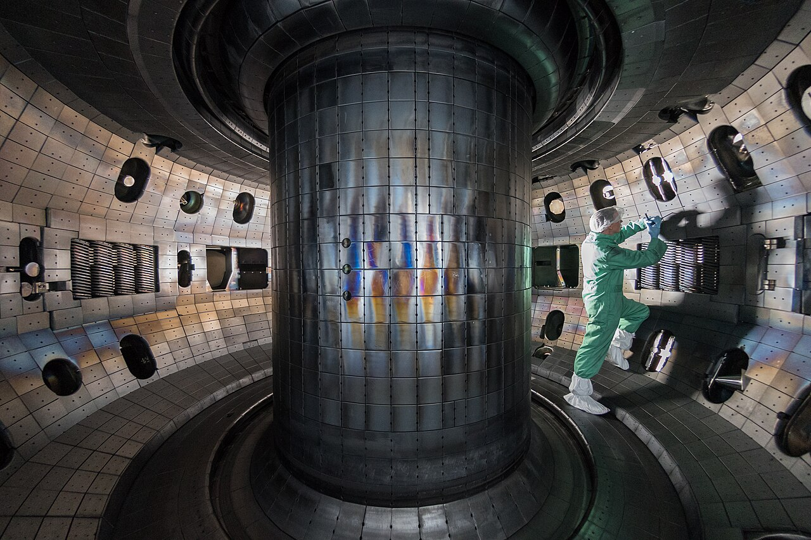

Tokamak 융합 챔버 내부 (2017)
융합 에너지의 핵심 난제는 1억 도 플라즈마를 자기장으로 붙잡는 일. 순간 흔들림에도 반응이 꺼진다. 고전적 제어로는 수천 개 코일 출력을 실시간으로 조정하기 어렵다.
DeepMind + EPFL(2022)은 강화학습 에이전트에게 플라즈마 형상 자체를 조각하게 했다. 19개 자기 코일을 동시에 제어해 사각형·삼각형 플라즈마까지 만들어냈다.